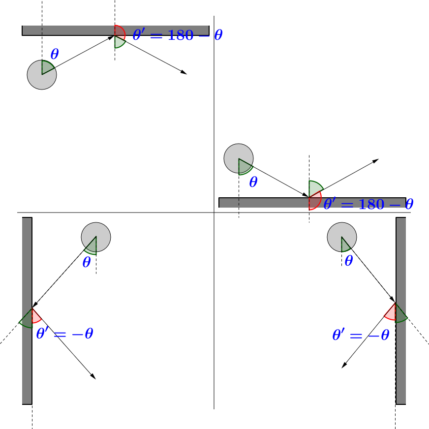

Mathematics in Space Shooter
Mouse Tracking
In XNA, the definition of the location of anything in the gameplay area is a vector starting from the origin of the gameplay area pointing to where that “anything” is.
For example, there is the protagonist sprite and the mouse. Here are their locations from the origin of the gameplay area. (You’ll notice something strange about the axes: the y-axis points downwards!)
What I want to find now is a way to rotate the protagonist sprite so that it points towards the location of the mouse. For that, I need to label the vectors, add two more vectors, explain a little bit about how angles are measured in XNA, and use a vector operation called the dot product. Here’s the picture detailing the labeled and added vectors:
The two new vectors here are , the vector difference between the position of the mouse and the position of the sprite, and , which is the unit vector in the opposite direction of the -axis.
Now, in XNA, if a sprite is rotated 0°, it points in the direction of the positive -axis. Therefore, to have the sprite point in the direction of the negative -axis, the sprite must begin with a rotation of 180°.
In order to find the angle between the unit vector and , I used the dot product:
or
where the dot stands for the dot product and the vertical bars stand for the absolute value.
Now all I have to do is put in the vectors I want to find the angle between, namely and . This gets me:
Then, I either add or subtract this angle from 180° depending if the mouse is to the right or to the left of the sprite, respectively.
Now the sprite can track the mouse.
Reflection
In Space Shooters, after firing all of their ammunition, the wasp UFOs will go off in a random direction and bounce off the walls of the gameplay area. When they bounce, they change direction, and in addition to the velocity changing, I wanted the rotation to convey that. So, having said that, let me explain how this was done—with pictures.

And there you have it.